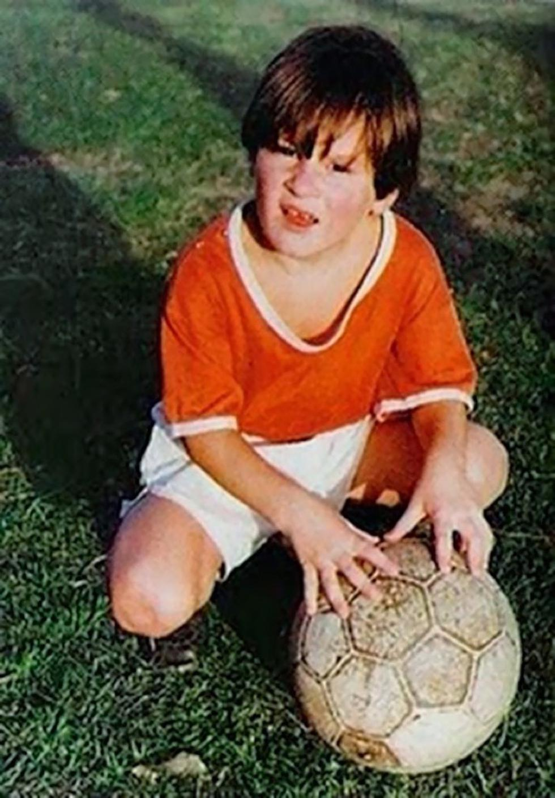
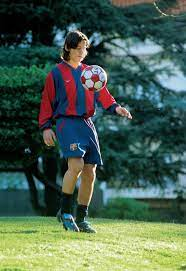
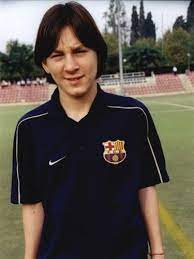
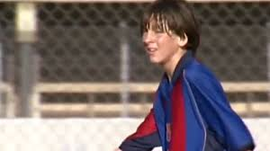

| Lionel Messi |
| Inicio |
Biografia |
Logros |
Contactos |
|  |
Lionel Andrés Messi (alias Leo, Lio, La Pulga, La Pulga Atómica, El Mesías) nació el 24 de junio de 1987 en la ciudad argentina de Rosario. Se crió junto a tres hermanos en un barrio obrero llamado General Las Heras. A los 5 años de edad, empezó a jugar en el Grandoli, un pequeño club de barrio en el que su familia estaba muy involucrada. |
Al cumplir 8, Leo ya estaba jugando para las categorías inferiores de Newell’s Old Boys, un importante club profesional de Rosario.En el 2000, a los 13 años, Lionel Messi firmó con el Fútbol Club Barcelona y se mudó con su familia a España, ya que el club catalán aceptó hacerse cargo de los tratamientos con hormonas como parte del contrato. Tras progresar rápidamente por la academia juvenil del Barcelona, «La Masia», Leo hizo su debut en la temporada 2004-05, a los 17 años. |
|  |
 |
 |
 |
| El Barça resultó ganador de La Liga en esa temporada, y en la siguiente conquistó el doble título de campeón de La Liga y de la Champions League de la UEFA. El primer gran éxito de Messi vino en la temporada 2008-09, en la que ayudó al Barcelona a conquistar el primer triplete del fútbol español, incluyendo la Copa del Rey, La Liga y la Champions.A la edad de 34 salio del Futbol Club Barcelona y fue contratado por el Paris Saint-Germain donde juega actualmente |